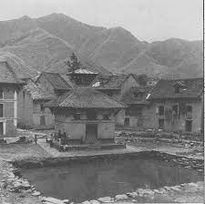
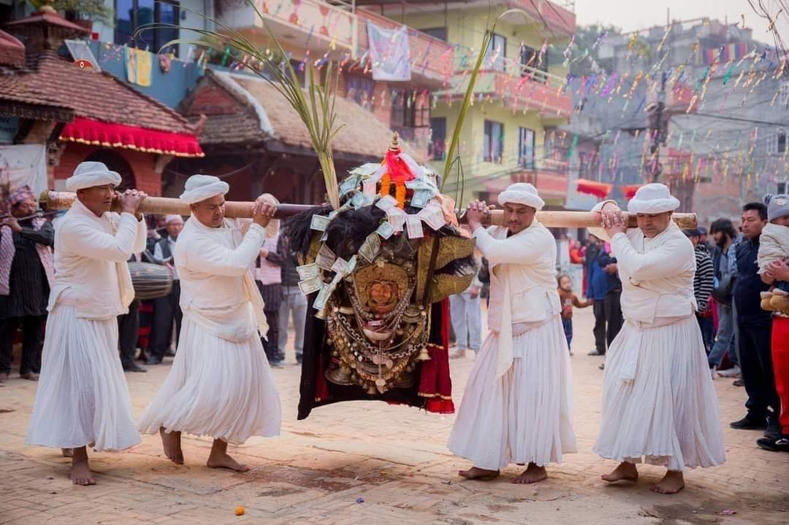

Gallary File
Kisipide
Home
About
Gallery
Contact Us
Old Pictures
Old Photo of Kisipide
Old Photo of Kisipide
Radha Krishana Temple (Old) Kisipide,
Chandragiri word 05

Kalika Temple and Pond (Old)
Kisipide, Chandragiri word 05
Old Photo of Kisipide
Old Photo of Kisipide
Kalika Pith Temple,
Chandragiri 05, Kisipide
Inside Kalika Pith Temple (New).
Kalika Pith Temple (Old).

God Bhirav during Shree Kalika Bhirav Jatra